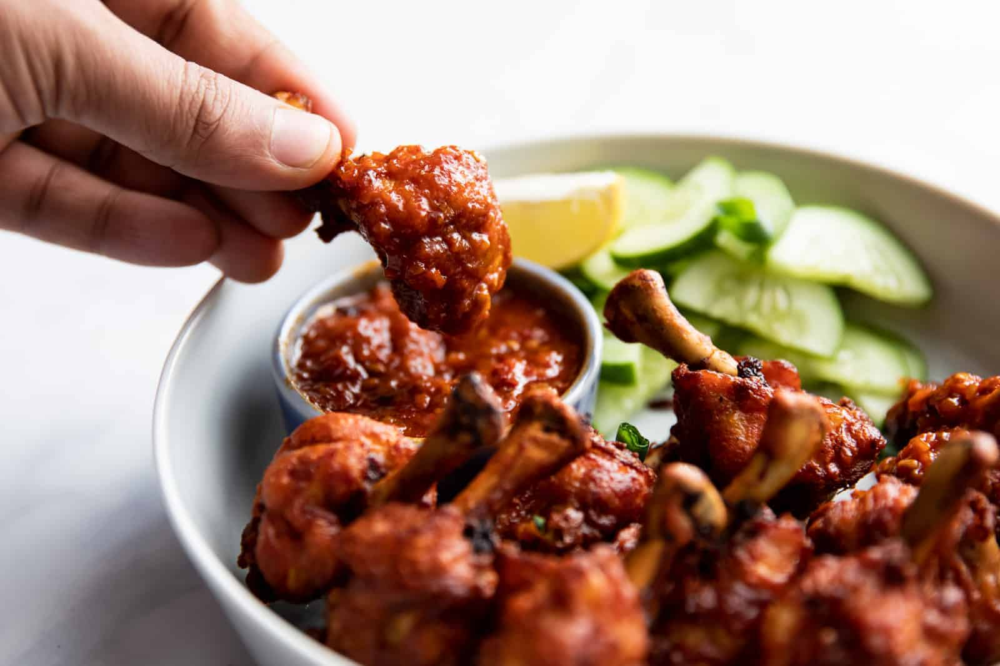

Chicken Lollipop UWOOHHH

Description
Chicken lollipop is a popular Indo-Chinese appetizer where a frenched chicken drumette is marinated and then better fried.
Chicken lollipops are the ultimate appetizer for any occasion! Everyone loves these saucy, super flavorful and delicious lollipops with a kick!
Ingredients
- 3 tbsp of soy sauce
- 1 teaspoon powdered red chilli pepper
- 1 tbsp ginger garlic paste
- 1 tbsp Ketchup
- 1 tbsp vegetable oil
- 1 all-purpose flour
- Vegetable oil for dee-frying
- 2 teaspoons rice flour
- 1 tbsp cornstarch
- 1 egg
Steps
- Pat the chicken lollipops dry with paper towels.
- Combine the soy sauce, chilli powder, ginger garlic paste, ketchup, and vegetable oil in a large mixing basin.
- Add the chicken lollipops to the marinade and toss to coat. Put it covered in the refrigerator for at least 1 hour & up to 12 hours.
- Combine the all-purpose flour, rice flour, cornflour, cornstarch, egg, and salt in a large mixing basin. Blend the batter until it is smooth and free of lumps.
- Allow any extra marinade to drip off the chicken lollipops before removing them from the marinade.
- Holding one chicken lollipop's exposed bones, dip the meaty end of the chicken lollipop into the batter to completely coat, then place it aside on a dish. Repeat this step with the rest of the chicken lollipops.
- Paper towels should be used to line a sheet tray.
- Heat three inches of vegetable oil in a big saucepan or Dutch oven to 180℃.
- Fry the chicken lollipops in batches until golden brown, about 5 minutes for each lollipop.
- Place the fried chicken lollipops on a sheet tray lined with paper towels. Serve immediately
Go To Top
Go To Main Page